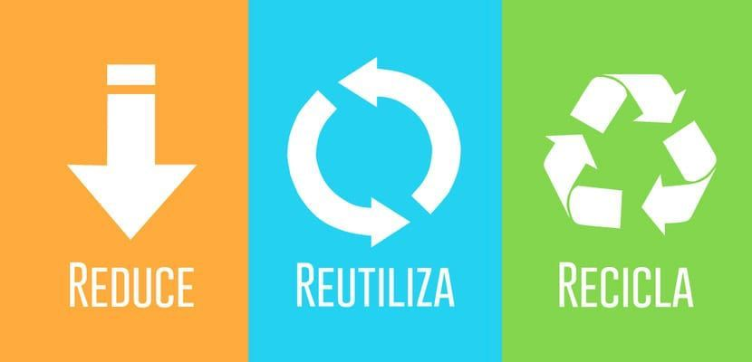
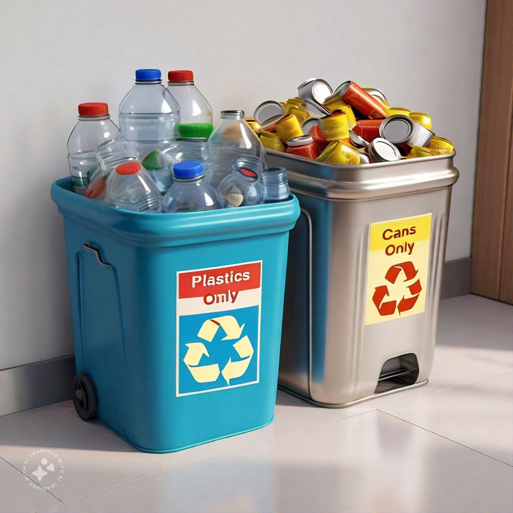

Funciones
¿Porque nos diferenciamos de nuestros competidores?
La banda transportadora a diferencia de lo que se puede creer, no es un producto, es un servicio, un servicio el cual resuelve una problematica que azota a todo el mundo, la contaminacion, esta resolucion del problema va desde, pequeños establecimientos a grandes corporaciones, esta accesibilidad y eficiencia, no solo hace a la banda un producto facil de adquirir, si no algo indispensable para una sociedad actual
Funciones principales
La banda tiene como funcion principal, regular y ayudar al reciclaje, gracias a que esta pensado para ser un servicio el cual funciona en cualquier contexto, ya sean corporaciones, poblaciones o sectores de servicios publicos, teniendo una flexibilidad mayor, ya que cuenta con sensores los cuales detectan el tipo de residuo ingresado, clasificandolo de manera correcta, ayudando a que la labor del recliclaje sea mas amena y eficiente en varias escalas

Propuesta de valor
Desarrollar una innovadora solución de clasificación automatizada que emplee tecnología de amplitud de sensores y algoritmos inteligentes para reconocer, distinguir y manejar botellas de plástico y latas. Esta alternativa no solo disminuye hasta un 50% el tiempo de clasificación, sino que también potencia la eficiencia en el reciclaje, fomentando un efecto beneficioso en la sostenibilidad del medio ambiente. Fomenta una economía circular a través de la mejora del proceso de reciclaje, lo cual reduce el derroche de recursos, disminuye la huella de carbono y produce valor a escala local y mundial.
